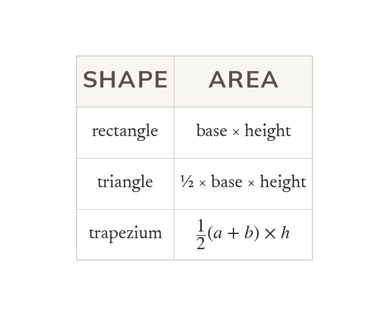

Three area formulae
A rectangle is base × height. A triangle is ½ × base × perpendicular height. A trapezium is with and parallel.
A rectangle is base × height, and a triangle is ½ × base × perpendicular height. A trapezium is half the sum of the parallel sides times the height between them.